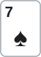

안녕하세요. 대회 후반, 스택 20BB 레벨이에요. 버블 전이라 칩 기준으로 셈해요. 오늘은 모두 접고 SB인 Hero와 BB 둘만 남은 블라인드 배틀이에요.
블라인드 배틀은 두 사람 레인지가 모두 넓고, SB는 플랍부터 리버까지 늘 먼저 말하는 자리(포지션 없음)예요. 그래서 SB는 프리플랍 크기를 고를 때부터 "콜을 받으면 플랍에 스택이 얼마나 남나"를 같이 정해요. 오늘은 그 계획을 프리플랍 크기부터 끝까지 따라가요.
이 글에서 배울 것
- 블라인드 배틀 SB가 림프·2BB·2.5BB·3BB 중 크기를 고를 때 바뀌는 세 숫자(바로 가져오는 기준, BB의 가격, 플랍 SPR)
- 포지션 없이 SPR 3 근처에서 탑페어로 c-bet 크기를 턴에 맞춰 고르는 법
- 계획 중에 상대가 먼저 올인할 때, 드로우의 아웃 수가 판정 여유를 어떻게 바꾸는지
오늘의 한 판
Hero (SB · 스택 20BB) · 상대 (BB · 스택 20BB) · 블라인드 0.5/1, BB 앤티 1BB · 대회 후반

프리플랍
UTG~BTN 폴드 → Hero(SB)는 림프할까, 얼마로 레이즈할까? Hero 2.5BB 레이즈 → BB 콜. 팟 6BB
팟은 두 사람의 2.5BB씩과 BB 앤티 1BB예요. BB는 앤티까지 3.5BB를 넣어 16.5BB가 남고, Hero는 17.5BB가 남아요. 유효 스택은 16.5BB예요.
플랍 · 팟 6BB

Hero 3BB c-bet → BB 16.5BB 올인(레이즈) → Hero는 콜할까, 접을까? Hero 콜(13.5BB 더). 최종팟 39BB
Hero는 7 탑페어, 키커 A예요. 프리플랍에 레이즈한 사람이 Hero라서, 플랍에서 Hero가 먼저 거는 이 벳은 c-bet이에요. SB는 포지션이 없으니 BB보다 먼저 말하는 OOP c-bet이 돼요.
턴·리버

BB는 6♦5♦(양방 스트레이트 드로우)였어요. 턴 K♣, 리버 3♥로 BB가 3-4-5-6-7 스트레이트를 맞춰 이겼어요.
결론부터 말할게요. 프리플랍은 2.5BB 레이즈, 플랍은 3BB c-bet, BB 올인에는 콜이에요. 졌어도 맞는 콜이에요. 2.5BB 레이즈는 BB가 약 44.44% 접으면 바로 본전이고, 콜을 받으면 플랍 SPR이 2.75가 돼요. 이 얕은 깊이 덕분에 BB가 먼저 다 넣어도 Hero의 남은 콜은 13.5BB, 필요 에퀴티는 약 34.62%예요. BB가 이기는 핸드에 양방 드로우까지 섞어 민다고 보면 A♦7♠는 약 39.96%라 콜이에요.
오늘의 가정
레인지는 설명을 위한 가정이에요(솔버 결과 아님).
- SB(Hero) 오픈: 림프 없이 레이즈 아니면 폴드로 연다고 봐요. 레이즈 레인지는 22+, A2+, K2s+, K5o+, Q4s+, Q8o+, J6s+, J8o+, T6s+, T8o+, 96s+, 98o, 85s+, 75s+, 64s+, 53s+, 43s로 650콤보(전체 핸드의 약 49.02%). A♦7♠는 이 안에 들어요
- BB 콜 레인지(SB 2.5BB 상대): 22-99, A2s-ATs, A2o-ATo, K2s-KJs, K5o-KJo, Q2s+, Q8o+, J4s+, J8o+, T6s+, T8o+, 95s+, 97o+, 85s+, 87o, 74s+, 76o, 63s+, 65o, 52s+, 54o, 42s+, 32s. A♦7♠를 빼면 593콤보, 플랍 카드까지 빼면 539콤보
- TT+·AJ+·KQ는 3벳한다고 보고, BB의 3벳(올인 포함)은 오늘 계산에서 빼요. 1단계 크기 비교에서는 BB가 크기와 상관없이 같은 핸드로 콜한다고 단순화해요
- 플랍에서 BB 레인지를 이렇게 나눠요(핸드 분류는 카드 한 장씩 족보로 확인)
- A♦7♠를 이기는 핸드 22콤보: 셋(22·44·77), 투페어(74s·42s), 오버페어(88·99 12콤보)
- 양방 드로우 20콤보: 65·53s(3 또는 8·6 또는 A가 오면 스트레이트)
- 거트샷 36콤보: A3·A5(5 또는 3 한 장으로 휠), 63s·85s·86s
- 약한 7 40콤보(K7·Q7·J7·T7·97·87·76·75s), 비기는 A7 6콤보, 나머지 페어·빈손
- BB가 Hero c-bet에 올인하는 레인지는 세 가지로 나눠 셈해요: 이기는 핸드만 / +양방 드로우 / +거트샷
1단계. 프리플랍: 림프할까, 얼마로 열까
지금 하는 질문
여기서 Hero가 묻는 건 "A7o가 열 만한 핸드인가"가 아니에요. 그건 오픈 레인지 가정에서 이미 정했어요. 지금 질문은 "이 크기로 열면 BB가 얼마에 막고, 콜을 받으면 플랍에 무엇이 남나"예요. 시작 팟은 SB 0.5BB, BB 1BB, 앤티 1BB를 더해 2.5BB예요.
크기별로 바뀌는 숫자
레이즈 크기마다 Hero가 더 내는 돈이 달라지고, 그 돈이 세 숫자를 함께 움직여요.
| SB의 선택 | Hero가 더 내는 돈 | BB가 이만큼 접으면 본전 | BB 콜 필요 에퀴티 | 콜 뒤 플랍 팟 | 플랍 SPR |
|---|---|---|---|---|---|
| 림프(1BB까지) | 0.5BB | 바로 가져오는 몫 없음 | 체크하면 공짜 | 3BB | 6 |
| 2BB | 1.5BB | 37.5% | 20% | 5BB | 3.4 |
| 2.5BB | 2BB | 약 44.44% | 25% | 6BB | 2.75 |
| 3BB | 2.5BB | 50% | 약 28.57% | 7BB | 약 2.29 |
오늘 고른 줄을 식으로 보면 이래요. '본전'은 BB가 콜하면 판을 셈에서 빼고, 접을 때 얻는 2.5BB만 본 기준이에요.
본전 폴드율 = 2 ÷ 4.5 = 약 44.44% BB 필요 에퀴티 = 1.5 ÷ 6 = 25% 플랍 SPR = 16.5 ÷ 6 = 2.75
림프는 왜 아닐까
림프하면 Hero는 0.5BB만 더 내지만, BB는 돈을 더 내지 않고 체크로 플랍을 봐요. 바로 가져오는 몫이 없어요. 그리고 플랍 SPR이 이렇게 깊어져요.
림프 플랍 SPR = 18 ÷ 3 = 6
A10에서 본 셈으로 SPR 6은 팟 크기 벳을 3번 해야 다 들어가는 깊이예요. 포지션 없는 Hero가 플랍·턴·리버 모두 먼저 말하면서 끝까지 끌고 가야 하는 판이에요. 레이즈한 세 크기는 모두 팟 크기 벳 2번이면 다 들어가요.
2BB, 2.5BB, 3BB 사이
세 크기 모두 팟 벳 두 번이면 들어가니, 차이는 SPR보다 가격과 위험에서 나요. 2BB는 위험이 1.5BB로 작지만 BB에게 20%짜리 가격을 줘요. 실제 BB가 가격이 좋아질수록 더 넓게 막는 사람이라면, 그만큼 바로 가져오는 몫이 줄어요. 3BB는 BB 가격을 약 28.57%로 올리지만, 바로 가져오려면 절반을 접게 해야 해요.
크기를 키우는 쪽에는 한 가지 근거가 더 있어요. 가정한 BB 콜 레인지 상대 A♦7♠의 프리플랍 에퀴티는 약 56%(몬테카를로)예요. BB가 크기와 상관없이 같은 핸드로 콜한다면, 에퀴티만 보면 앞서는 쪽이 넣는 돈이 커질수록 유리해요. 다만 Hero는 포지션이 없어 이 에퀴티를 다 실현하기 어렵고, 크기가 커질수록 BB 3벳 올인에 잃는 돈도 커져요. 오늘 2.5BB는 이 두 쪽 사이에서 고른 중간 크기예요.
20BB 올인은?
시작 팟 2.5BB를 얻으려고 19.5BB를 더 거는 수예요. BB가 콜하면 진다고 칠 때의 본전 폴드율은 약 88.64%까지 올라가요. A7o처럼 레이즈로 플랍을 볼 수 있는 깊이에서는, 올인은 위험을 크게 키우고, BB는 A7o보다 강한 핸드만 골라 콜할 수 있어요.
이게 무슨 뜻이냐면
블라인드 배틀 SB의 오픈 크기는 이번 판돈만이 아니라 플랍 SPR의 설계도예요. 2.5BB로 열고 콜을 받는 순간, 이 판은 16.5BB 대 6BB, SPR 2.75의 판으로 정해져요.
2단계. 플랍 7♥4♣2♠: 포지션 없이 c-bet, 크기는 턴에 맞춰
거는 이유
질문이 바뀌었어요. 이제는 "얼마로 열까"가 아니라 "먼저 말하는 자리에서 걸까, 체크할까"예요.
A♦7♠의 BB 플랍 레인지(539콤보) 상대 에퀴티 = 약 76.36%
크게 앞서요. Hero가 체크하면 BB는 뒤에서 체크로 다음 카드를 공짜로 볼 수 있어요. BB 539콤보 안에는 양방 드로우와 거트샷이 합쳐 56콤보 들어 있어요. c-bet을 하면 이 드로우들이 공짜가 아니라 값을 내고 턴을 봐야 해요.
BB 필요 에퀴티 = 3 ÷ 12 = 25%
크기: 턴에 남는 스택을 보고
R23 2단계에서 크기별 턴 SPR을 본 것처럼, 낮은 SPR에서는 플랍 크기가 턴에 남는 스택 ÷ 턴 팟을 정해요.
3BB c-bet, 콜 → 턴 SPR = 13.5 ÷ 12 = 1.125 2BB c-bet, 콜 → 턴 SPR = 14.5 ÷ 10 = 1.45
3BB면 턴 올인 13.5BB가 턴 팟 12BB와 비슷한 크기로 남아요. 2BB면 턴 올인이 팟보다 더 큰 벳이 돼요. 어느 쪽이 나은지는 BB가 큰 올인에 얼마나 덜 콜하느냐에 달려 있어요. BB가 큰 벳일수록 더 좁게 받는 사람이라면 3BB가 턴 계획을 매끄럽게 해요. 오늘 Hero는 그렇게 보고 플랍 3BB + 턴 올인의 두 번 계획을 세웠어요.
이게 무슨 뜻이냐면
포지션이 없는 쪽은 다음 스트리트에 상대가 무엇을 할지 보고 고를 수 없어요. 그래서 이번 크기로 다음 스트리트의 모양을 미리 정해 두는 것이 OOP에서 계획을 세우는 방법이에요.
3단계. BB의 올인: R23에서 본 방법으로
계획은 턴에 Hero가 올인하는 거였는데, BB가 한 스트리트 먼저 플랍에서 다 넣었어요. 이제 질문은 "이 올인에 무엇이 섞였나"예요. R23에서 본 대로 커밋은 SPR 숫자가 아니라, 상대 올인 레인지 상대 에퀴티가 남은 콜의 필요 에퀴티를 넘느냐로 정해요.
필요 에퀴티 = 13.5 ÷ 39 = 약 34.62%
| BB 올인 레인지 | 콤보 | A♦7♠ 에퀴티 | 필요 약 34.62%와 비교 |
|---|---|---|---|
| 이기는 핸드만(셋·투페어·88·99) | 22콤보 | 약 16.2% | 폴드 |
| + 양방 드로우(65·53s) | 42콤보 | 약 39.96% | 콜 |
| + 거트샷(A3·A5·63s·85s·86s) | 78콤보 | 약 57.66% | 콜 |
이 BB가 양방 드로우로도 미는 사람인지는 이 판 하나로 알 수 없어요. Hero가 그렇게 읽었다면 콜이고, 그 읽기가 맞았는지는 같은 BB와 다시 붙을 블라인드 배틀에서 확인할 몫이에요.
가격을 만든 건 1단계였어요
이 콜이 둘째 줄에서 되는 건, 남은 콜이 13.5BB로 작아서예요. 1단계에서 2.5BB로 열어 SPR 2.75를 만들었고, 2단계에서 3BB를 먼저 넣었어요. 그 두 결정이 여기서 약 34.62%라는 가격으로 돌아왔어요.
이게 무슨 뜻이냐면
블라인드 배틀의 낮은 SPR에서는 큰 결정이 플랍 한 번에 몰려요. 그 결정의 가격은 앞에서 고른 크기가 정해 두고, 판정은 상대 올인에 드로우가 섞이느냐가 정해요.
4단계. 결과: 6♦5♦
BB는 6♦5♦, 양방 드로우였어요. 3단계 표의 둘째 줄 묶음이에요. 턴 K♣는 빈 카드였고, 리버 3♥가 3-4-5-6-7 스트레이트를 만들었어요.
진 판이지만 결정은 3단계에서 정해졌어요. BB가 양방 드로우로도 미는 사람이라면 Hero의 콜은 약 39.96% 대 약 34.62%로 맞아요. 이번에는 BB의 드로우 몫이 나왔을 뿐이에요.
왜 그럴까: 양방과 거트샷은 아웃 수가 달라서
양방 8장, 거트샷 4장
3단계 표에서 거트샷을 더하면 여유가 크게 늘었어요. 이유는 아웃 수예요. 6♦5♣ 같은 65는 3이나 8이 오면 스트레이트라 아웃이 8장이고, A5·63s 같은 거트샷은 한 숫자만 기다려 4장이에요. 두 핸드의 카드를 빼면 남은 카드는 45장이에요.
8장 아웃이 턴·리버 두 장 중 한 번 이상 맞을 확률 = 약 32.73% 4장 아웃이 두 장 중 한 번 이상 맞을 확률 = 약 17.17%
그래서 Hero가 앞서는 정도가 달라요
| BB 핸드 | A♦7♠ 에퀴티 |
|---|---|
| 6♦5♣(양방) | 약 65.76% |
| 6♠3♠(거트샷) | 약 78.48% |
| A♠5♥(거트샷, 휠) | 약 81.52% |
양방 드로우만 섞일 때는 Hero가 앞서는 핸드가 늘지만, 그 핸드 상대로도 셋 중 하나는 져요. 거트샷 36콤보는 Hero가 더 크게 앞서는 핸드라, 섞일수록 올인 레인지 전체의 평균이 빠르게 올라가요.
블라인드 배틀이라 이 묶음이 남아 있어요
이 핸드들이 BB 레인지에 있는 건 BB가 593콤보로 넓게 막았기 때문이에요. 좁게 막는 자리였다면 65o·A3o·63s 같은 핸드는 프리플랍에 이미 접혀 있었을 수 있어요. 넓은 두 레인지가 낮은 보드에서 만나니, BB 올인에 섞일 수 있는 드로우가 539콤보 중 56콤보만큼 남아 있는 거예요.
이게 무슨 뜻이냐면
상대 올인에 드로우가 섞인다는 말은 한 가지가 아니에요. 몇 장짜리 드로우가 섞이느냐에 따라 Hero의 여유가 달라지고, 블라인드 배틀은 그 드로우들이 레인지에 남아 있기 쉬운 자리예요.
자주 하는 실수
실수 1. "SPR 3이면 탑페어는 무조건 커밋" 이기는 핸드로만 미는 BB 상대로 A♦7♠는 약 16.2%예요. 필요 약 34.62%에 한참 못 미쳐요. 낮은 SPR은 가격을 싸게 만들 뿐, 판정까지 대신 정하지 않아요. 대신 "이 상대 올인에 드로우가 몇 콤보, 몇 장짜리로 섞이나"부터 세요.
실수 2. "SB는 포지션이 없으니 싸게 림프하고 본다" 림프하면 바로 가져오는 몫이 없고 플랍 SPR이 6으로 깊어져요. 포지션 없이 팟 벳 3번짜리 판을 끌고 가야 해요. 대신 SB에서 열 때는 크기별 플랍 SPR을 먼저 떠올려요.
실수 3. "드로우에 졌으니 다음엔 접는다" 6♦5♦는 오늘 콜을 맞게 만든 바로 그 묶음이에요. 그 묶음에 지는 판이 있어도, 그 묶음이 레인지에 있어서 콜이 이득이에요. 대신 복기할 때는 BB가 정말 드로우로 미는 사람이었나를 확인해요.
"SB는 포지션이 없는데, 체크로 넘기는 게 더 안전하지 않나요?"
체크하면 BB가 걸어 올 때 다시 정해야 하고, BB가 체크로 넘기면 드로우 56콤보가 공짜로 턴을 봐요. A♦7♠처럼 넓은 BB 상대 약 76.36%로 앞서는 핸드라면, 먼저 걸어 계획을 시작하는 쪽이 자연스러워요. 체크는 '안전'이 아니라, 다음 결정을 상대 행동에 맡기는 선택이에요. 포지션이 없을수록 크기로 다음 스트리트를 미리 정해 두는 것이 더 중요해요.
선생님의 한마디
SB에서 열 땐 크기를 고르면서 플랍 SPR을 같이 정해요. 포지션이 없으면 c-bet 크기로 턴에 남을 스택을 미리 맞춰요. 상대가 먼저 다 넣으면, 그 올인에 몇 장짜리 드로우가 섞였는지부터 세요.
연습 문제
학습툴 팟오즈 계산기로 필요 에퀴티를 확인할 수 있어요. 에퀴티는 문제에 준 값을 써요.
문제 1. 같은 A♦7♠, 같은 BB예요. 이 BB는 이기는 핸드와 양방 드로우로만 올인해요. 다른 건 하나, Hero가 프리플랍에 레이즈 대신 림프했어요. BB는 TT+·AJ+·KQ 말고는 모두 체크했다고 봐요. 플랍 7♥4♣2♠, 팟 3BB, 유효 스택은 18BB예요(BB는 앤티까지 내서 18BB, Hero는 19BB가 남아요). Hero 1.5BB 벳 → BB 18BB 올인. 체크 레인지가 넓어져 BB 올인 레인지는 이기는 핸드 40콤보(72o·74o·42o 투페어가 늘었어요)와 양방 드로우 32콤보(53o도 들어와요)를 합친 72콤보, A♦7♠ 에퀴티는 약 41.71%예요. 더 낼 돈과 최종팟을 직접 세고, 콜? 폴드?
정답 보기
더 낼 돈 = 18 − 1.5 = 16.5 최종팟 = 3 + 18 + 18 = 39 필요 에퀴티 = 16.5 ÷ 39 = 약 42.31% 에퀴티 약 41.71% < 필요 약 42.31% → 폴드
같은 핸드, 같은 BB의 습관인데 판정이 뒤집혔어요. 림프로 SPR 6에서 시작하니 플랍 벳이 작고, BB 올인에 Hero가 더 낼 돈이 커졌어요. 차이는 아슬아슬하지만, 프리플랍 크기가 플랍 콜의 가격까지 정한다는 걸 보여 줘요.
문제 2. 이번엔 BB 자리에서 봐요. 본문과 같은 판인데, BB가 6♦5♦로 플랍 3BB c-bet에 콜만 했어요. 턴 K♣, Hero가 13.5BB 올인했어요. Hero 핸드가 A♦7♠라고 치면 6♦5♦의 에퀴티는 약 18.18%예요(리버 한 장에 아웃 8장). BB는 콜? 폴드?
정답 보기
최종팟 = 12 + 13.5 + 13.5 = 39 BB 필요 에퀴티 = 13.5 ÷ 39 = 약 34.62% 에퀴티 약 18.18% < 필요 약 34.62% → 폴드
플랍에서 콜만 한 양방 드로우는 턴에 한 장짜리 가격을 받고 접어야 해요. Hero의 '플랍 3BB + 턴 올인' 계획이 드로우에게 남기는 자리가 이거예요. 그래서 이런 BB가 드로우를 끝까지 보려면 콜이 아니라 플랍에서 먼저 미는 길을 고를 수 있고, 그게 본문에서 Hero가 받은 올인이에요.
핵심 정리
- 블라인드 배틀 SB의 오픈 크기는 바로 가져오는 기준, BB의 가격, 플랍 SPR을 함께 정해요(2.5BB → 약 44.44%, 25%, SPR 2.75)
- 포지션 없는 c-bet 크기를 고를 때는 턴에 남을 스택 ÷ 턴 팟도 함께 봐요(오늘 3BB면 1.125, 2BB면 1.45)
- 커밋은 SPR 숫자가 아니라 상대 올인 레인지 상대 에퀴티가 정해요(R23의 방법)
- 상대 올인에 섞인 드로우가 양방 8장인지 거트샷 4장인지에 따라 Hero의 여유가 달라져요
정리하며
오늘은 대회 후반 20BB 블라인드 배틀에서 SB A♦7♠를 2.5BB로 열어 SPR 2.75의 판을 만들었어요. 플랍 7 탑페어로 OOP c-bet 3BB를 걸어 턴 올인까지 두 번 계획을 세웠고, BB가 먼저 올인하자 그 올인에 드로우가 섞이느냐를 물어 콜했어요. 리버에 BB의 드로우가 맞아 졌지만, 드로우로도 미는 BB라면 맞는 콜이었어요.
다음 글 R31에서는 스택 30BB에서 스틸에 올인이 아닌 작은 3벳으로 대응하는 판을 봐요. 오늘은 SB가 여는 크기로 SPR을 정했다면, 다음은 받는 쪽이 3벳 크기로 SPR을 어떻게 남길지 셈해요.
AI 작성 · 숫자는 계산 검증 · 가정 레인지 기준(솔버 결과 아님) · 토너 BB 앤티 1BB · 남은 베팅이 있어 BB 금액은 계산용